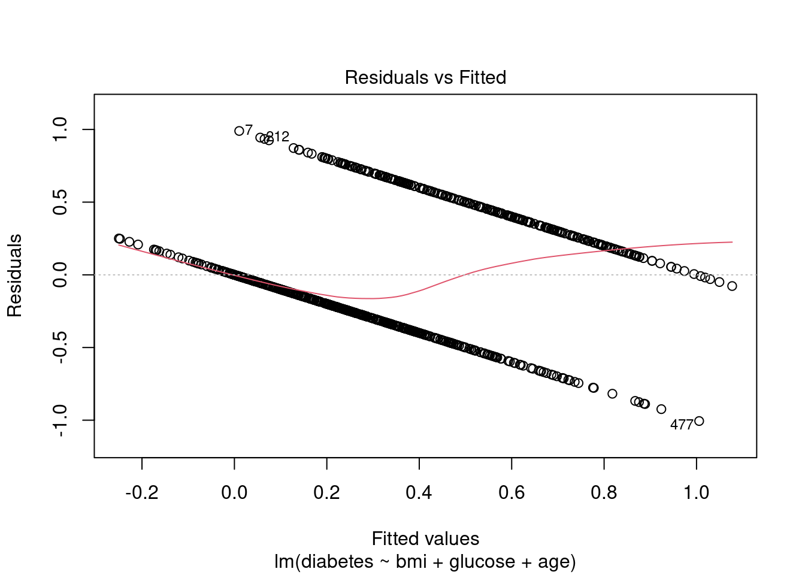
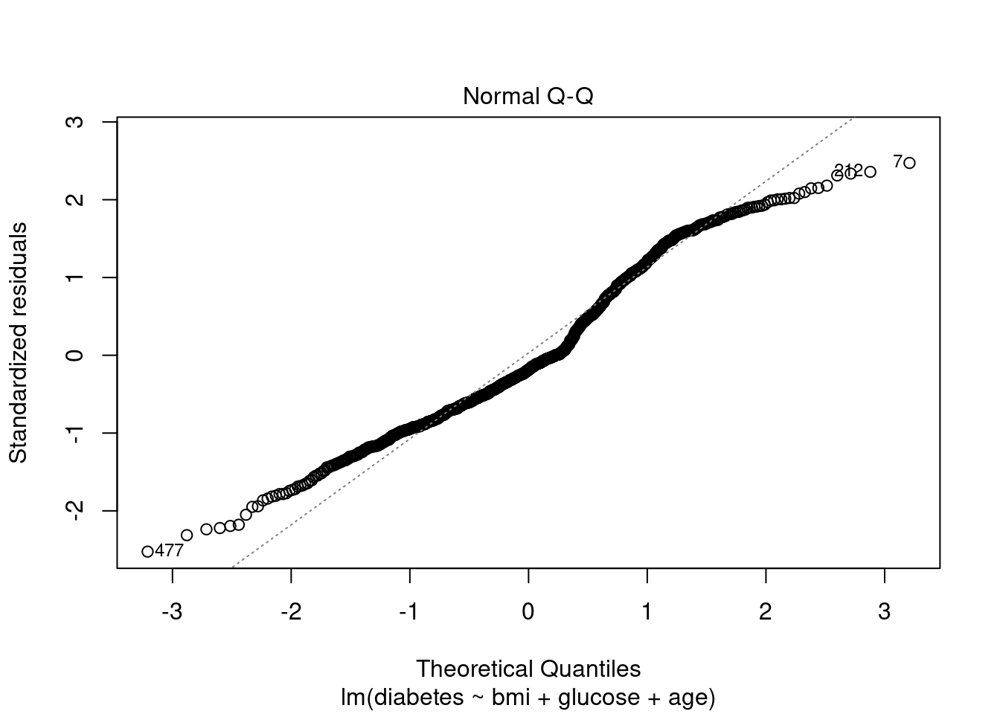
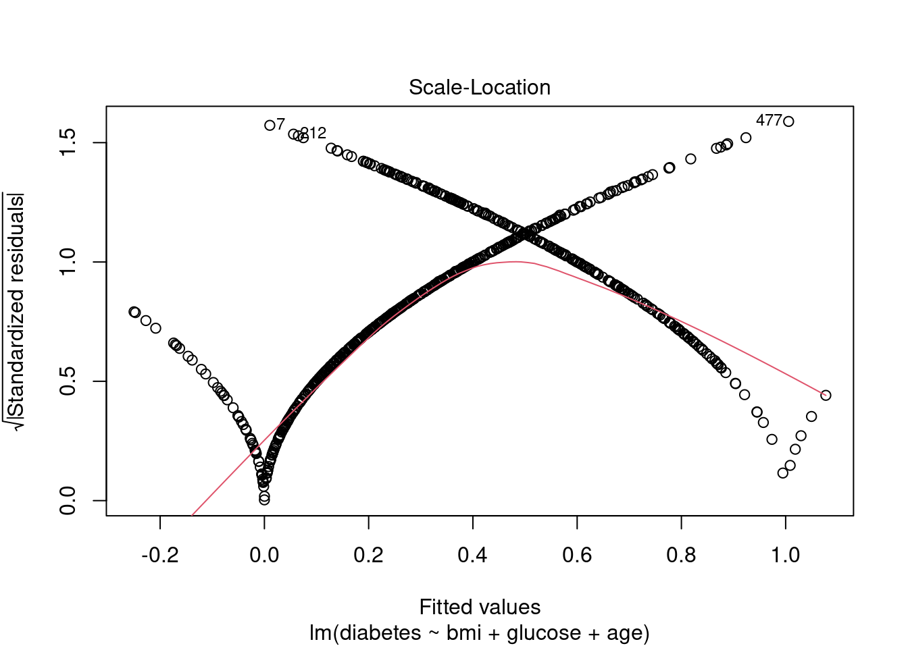
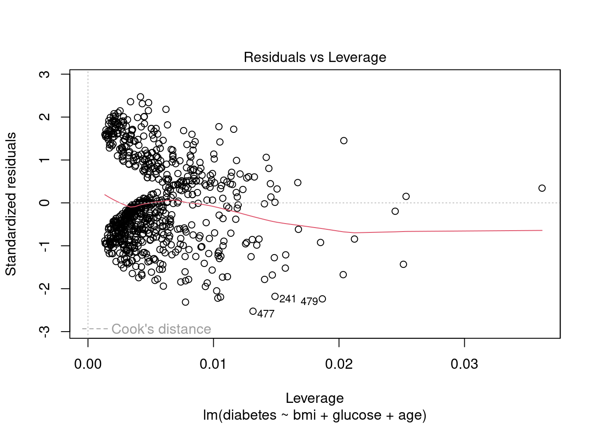

According to the World Health Organization (WHO), an estimated 537 million people worldwide are living with diabetes. It is a leading cause of health complications and even death. The WHO states close to 1.5 million people died due to diabetes and its complication in 2019 alone. It is a growing problem that requires dedicated research to aim at the slowdown and prevention of future cases.
Research Question
What risk factors are most predictive of diabetes?
Research on Diabetes is ongoing and in-depth within the medical field. The prevalence and incidence of diabetes mellitus type 2 (DQ2) have increased consistently for decades, giving way to an increase in mortality related to diabetes. Commonly in the medical field, many risk factors are used to measure a patient’s risk of developing DM2, such as obesity, family history, hypertension and changes in fasting blood sugar levels. Moreno et al. (2018) studied risk parameters for diabetes and concluded “risk of being diabetic rises in patients whose father has suffered an acute myocardial infarction, in those whose mother or father is diabetic and in patients with a high waist perimeter.” Their focus on family history leaves room for studies more focused on individual medical factors, such as blood pressure, BMI, number of pregnancies, etc. That is the aim of this project.
M. L. M. V. J. A. (2018, June 11). Predictive risk model for the diagnosis of diabetes mellitus type 2 in a follow-up study 15 Years on: Prodi2 study. European journal of public health. Retrieved October 9, 2022, from https://pubmed.ncbi.nlm.nih.gov/29897477/
Can the use of regression analysis help predict risk of diabetes based on several medical variables?
Other research, such as a Edlitz & Segal (2022) study titled Prediction of type 2 diabetes mellitus onset using logistic regression-based scorecards, does focus on using individual medical factors to predict risk of diabetes through regression. This project aims to conduct similar analysis on different data.
E. Y. S. E. (2022, June 22). Prediction of type 2 diabetes mellitus onset using logistic regression-based scorecards. eLife. Retrieved October 9, 2022, from https://pubmed.ncbi.nlm.nih.gov/35731045/
Hypothesis
Body mass index (BMI), glucose, and age are positive predictors of diabetes mellitus type 2.
This hypothesis has been tested in the above mentioned studies. The contribution from this project will be the additional support for or against the hypotheses from the analysis of different data.
Descriptive Statistics
The data was collected by the “National Institute of Diabetes and Digestive and Kidney Diseases” as part of the Pima Indians Diabetes Database (PIDD). A total of 768 cases are available in PIDD. However, 5 patients had a glucose of 0 and 11 patients had a body mass index of 0. After cleaning the data by removing the cases with numbers that are incompatible with life in categories important to the current research, 752 cases remained. All patients belong to the Pima Indian heritage (subgroup of Native Americans), and are females aged 21 years and above.
The datasets consists of 9 medical predictor (independent) variables and one target (dependent) variable, outcome.
Pregnancies: Number of times a woman has been pregnant Glucose: Plasma Glucose concentration of 2 hours in an oral glucose tolerance test BloodPressure: Diastolic Blood Pressure (mm hg) SkinThickness: Triceps skin fold thickness(mm) Insulin: 2 hour serum insulin(mu U/ml) BMI: Body Mass Index ((weight in kg/height in m)^2) Age: Age(years) DiabetesPedigreeFunction: scores likelihood of diabetes based on family history Outcome: 0 (doesn’t have diabetes) or 1 (has diabetes)
Code
df<-read_csv("_data/diabetes2.csv")
Rows: 768 Columns: 9
── Column specification ────────────────────────────────────────────────────────
Delimiter: ","
dbl (9): Pregnancies, Glucose, BloodPressure, SkinThickness, Insulin, BMI, D...
ℹ Use `spec()` to retrieve the full column specification for this data.
ℹ Specify the column types or set `show_col_types = FALSE` to quiet this message.
Code
dim(df)
[1] 768 9
Code
summary(df)
Pregnancies Glucose BloodPressure SkinThickness
Min. : 0.000 Min. : 0.0 Min. : 0.00 Min. : 0.00
1st Qu.: 1.000 1st Qu.: 99.0 1st Qu.: 62.00 1st Qu.: 0.00
Median : 3.000 Median :117.0 Median : 72.00 Median :23.00
Mean : 3.845 Mean :120.9 Mean : 69.11 Mean :20.54
3rd Qu.: 6.000 3rd Qu.:140.2 3rd Qu.: 80.00 3rd Qu.:32.00
Max. :17.000 Max. :199.0 Max. :122.00 Max. :99.00
Insulin BMI DiabetesPedigreeFunction Age
Min. : 0.0 Min. : 0.00 Min. :0.0780 Min. :21.00
1st Qu.: 0.0 1st Qu.:27.30 1st Qu.:0.2437 1st Qu.:24.00
Median : 30.5 Median :32.00 Median :0.3725 Median :29.00
Mean : 79.8 Mean :31.99 Mean :0.4719 Mean :33.24
3rd Qu.:127.2 3rd Qu.:36.60 3rd Qu.:0.6262 3rd Qu.:41.00
Max. :846.0 Max. :67.10 Max. :2.4200 Max. :81.00
Outcome
Min. :0.000
1st Qu.:0.000
Median :0.000
Mean :0.349
3rd Qu.:1.000
Max. :1.000
Glucose, blood pressure, skin thickness, insulin, BMI and Age are not variables that should logically have 0s. Those values, if true, are likely incompatible with life. To reduce the amount of data we exclude, we will only remove observations that have 0s for our explanatory variables. We will remove those cases from analysis.
Code
#Remove rows with 0 in respective columnsdf <- df[apply(df[c(2,6)],1,function(z) !any(z==0)),] #Verify 0s are gone in selected rowscolSums(df==0)
Pregnancies Glucose BloodPressure SkinThickness
Min. : 0.000 Min. : 44.00 Min. : 0.0 Min. : 0.00
1st Qu.: 1.000 1st Qu.: 99.75 1st Qu.: 64.0 1st Qu.: 0.00
Median : 3.000 Median :117.00 Median : 72.0 Median :23.00
Mean : 3.851 Mean :121.94 Mean : 69.7 Mean :20.72
3rd Qu.: 6.000 3rd Qu.:141.00 3rd Qu.: 80.0 3rd Qu.:32.00
Max. :17.000 Max. :199.00 Max. :122.0 Max. :99.00
Insulin BMI DiabetesPedigreeFunction Age
Min. : 0.00 Min. :18.20 Min. :0.0780 Min. :21.00
1st Qu.: 0.00 1st Qu.:27.50 1st Qu.:0.2440 1st Qu.:24.00
Median : 39.00 Median :32.30 Median :0.3770 Median :29.00
Mean : 81.35 Mean :32.45 Mean :0.4731 Mean :33.31
3rd Qu.:130.00 3rd Qu.:36.60 3rd Qu.:0.6275 3rd Qu.:41.00
Max. :846.00 Max. :67.10 Max. :2.4200 Max. :81.00
Outcome
Min. :0.0000
1st Qu.:0.0000
Median :0.0000
Mean :0.3511
3rd Qu.:1.0000
Max. :1.0000
At a glance, this summary is more fitting after having cleaned our data. An average of 3 pregnancies, considering our 21+ female population, makes sense. A mean glucose of 122, blood pressure of 70, a BMI of 33, and age of 33 are reasonably accurate for our population.
We have 752 observations and 9 variables with which to work. The data is clean and ready for analysis.
Let’s get familiar with the data set by observing the histograms for each variable.
Code
#Scatterplot matrixpairs(df)
Code
#Histograms of each variablehist.data.frame(df)
Error in hist.data.frame(df): could not find function "hist.data.frame"
The scatterplot matix shows that our variables generally lack linear relationships. Logistics regression may be best for analyzing this type of data.
The histograms show us the distribution of all our variables. Pregnancies is right skewed with more women having a smaller number of pregnancies and a small number having over 10. Glucose appears to follow a close-to-normal distribution with the mean just over 100. BMI follows a similar pattern with a central value of just over 30. Age is right skewed with the majority of the sample appearing to be in their 20s and slower tapering off to ages in their 50s. This is a good place to start. The only variable we cannot view in a histogram is the outcome variable due to its binary nature as a dummy variable.
Warning: The dot-dot notation (`..count..`) was deprecated in ggplot2 3.4.0.
ℹ Please use `after_stat(count)` instead.
About a third of our sample have diabetes, with 264 cases with diabetes and 488 without.
Hypothesis Testing
To test our hypothesis we could use either linear regression or logistics regression. Considering the outcome variable is binary, logistics regression is likely going to be best. First, though, let’s try to plot a linear regression as a type of diagnostics test.
Diagnostics
Code
dlm <-lm(diabetes ~ bmi + glucose + age, data = df)#Diagnostic plot of modelplot(dlm)




Residuals vs Fitted: The residuals have 2 distinct patterns of behavior. This is likely due to our model representing two distinct outcomes. It therefore breaks normality.
Normal Q-Q: The Q-Q plot, which indicates level of asymmetry, tells us our data is not a normal distribution. It appears to have a right tail (see the points drifting from the line at the top). It also has values away from the line on the bottom left, away from the intercept. This suggests our model also includes a left tail. This distribution seems to have “fat tails.”
Scale-Location: This plots the fitted values of the model along the x-axis and the square root of the standardized residuals along the y-axis. There is a clear X pattern among residuals. This suggests our model has heteroscedasticity, which is not ideal.
Residuals vs Leverage: The points on this graph all fall within Cook’s distance, indicating there are not any influential points in our regression model.
Conclusion: A linear regression does not appear to be the best regression analysis to use for this data. Instead, we will work with logistics regression to test our hypothesis, then train and test the data.
Code
#Create training and test dataset.seed(1)bgap %>%nrow() %>%multiply_by(0.7) %>%round() -> training_set_sizetrain_indices <-sample(1:nrow(df), training_set_size)train <- bgap[train_indices,]test <- bgap[-train_indices,]nrow(train)
Our hypothesis involves the BMI, glucose, and age variables. First we can take a look at them individually.
Code
#Logistics regression is best for binomial outcome variables #Regression model on BMImbmi <-glm(diabetes ~ bmi, data = train, family =binomial(link ="logit"))summary(mbmi)
Call:
glm(formula = diabetes ~ bmi, family = binomial(link = "logit"),
data = train)
Deviance Residuals:
Min 1Q Median 3Q Max
-1.8832 -0.9260 -0.6873 1.2627 1.8509
Coefficients:
Estimate Std. Error z value Pr(>|z|)
(Intercept) -3.63931 0.50474 -7.210 5.58e-13 ***
bmi 0.09121 0.01484 6.147 7.89e-10 ***
---
Signif. codes: 0 '***' 0.001 '**' 0.01 '*' 0.05 '.' 0.1 ' ' 1
(Dispersion parameter for binomial family taken to be 1)
Null deviance: 679.74 on 525 degrees of freedom
Residual deviance: 637.46 on 524 degrees of freedom
AIC: 641.46
Number of Fisher Scoring iterations: 4
Interpretation: The exponentiation of the coefficient tells us that a 1-unit increase in BMI multiplies the odds of diabetes by 1.096. The residuals are relatively small. The coefficient estimate suggests that for every 1 unit increase of BMI, the chance of diabetes increases 0.091. The very small p-value of 5.58e-13 indicates we can reject the null hypothesis and conclude a relationship between BMI and diabetes.
Code
#Regression model on glucose mgluc <-glm(diabetes ~ glucose, data = train, family =binomial(link ="logit"))summary(mgluc)
Call:
glm(formula = diabetes ~ glucose, family = binomial(link = "logit"),
data = train)
Deviance Residuals:
Min 1Q Median 3Q Max
-2.1477 -0.7987 -0.5104 0.8687 2.2829
Coefficients:
Estimate Std. Error z value Pr(>|z|)
(Intercept) -5.629753 0.530848 -10.605 <2e-16 ***
glucose 0.039752 0.004069 9.769 <2e-16 ***
---
Signif. codes: 0 '***' 0.001 '**' 0.01 '*' 0.05 '.' 0.1 ' ' 1
(Dispersion parameter for binomial family taken to be 1)
Null deviance: 679.74 on 525 degrees of freedom
Residual deviance: 549.68 on 524 degrees of freedom
AIC: 553.68
Number of Fisher Scoring iterations: 4
Interpretation: The exponentiation of the coefficient tells us that a 1-unit increase in plasma glucose concentration multiplies the odds of diabetes by 1.040. With a very small p-value, <2e-16, we can see that the plasma glucose concentrations of the 2 hour oral glucose tolerance test (GGT) are related to our outcome variable, diabetes. This makes sense as GGT is sometimes used as a diagnostic tool for diabetes.
Code
#Regression model on agemage <-glm(diabetes ~ age, data = train, family =binomial(link ="logit"))summary(mage)
Call:
glm(formula = diabetes ~ age, family = binomial(link = "logit"),
data = train)
Deviance Residuals:
Min 1Q Median 3Q Max
-1.6594 -0.8597 -0.7715 1.3214 1.6639
Coefficients:
Estimate Std. Error z value Pr(>|z|)
(Intercept) -1.85960 0.28150 -6.606 3.95e-11 ***
age 0.03637 0.00775 4.692 2.71e-06 ***
---
Signif. codes: 0 '***' 0.001 '**' 0.01 '*' 0.05 '.' 0.1 ' ' 1
(Dispersion parameter for binomial family taken to be 1)
Null deviance: 679.74 on 525 degrees of freedom
Residual deviance: 656.96 on 524 degrees of freedom
AIC: 660.96
Number of Fisher Scoring iterations: 4
Interpretation: The exponentiation of the coefficient tells us that a 1-unit increase in age (years) multiplies the odds of diabetes by 1.037. The estimate shows us that one unit increase of age (1 year), increases the l Similar to the previous variable, age has a small standard error. It shows a p-value of 2.71e-06, indicating a relationship between age and diabetes.
The hypothesis that BMI, glucose tolerance results, and age are positively associated with diabetes is supported. The small p-values show the variables are significant at 1% level of significance. We are able to reject the null hypothesis. Next, we can investigate models that could help predict the outcome using these variables.
Model Comparisons
Code
#Model 1 using all independent variables - pregnancies, glucose, bmi, ageall_var <-glm(diabetes ~ ., data = train, family =binomial(link ="logit"))#Model 2 using BMI, glucose, and agebga <-glm(diabetes ~ . -pregnancies, data = train, family =binomial(link ="logit"))#Model 3 using BMI and glucosebg <-glm(diabetes ~ .-age -pregnancies, data = train, family =binomial(link ="logit"))#Model 4 using BMI, glucose, age, and an interaction between pregnancies and age.ia <-glm(diabetes ~ glucose + bmi + age*pregnancies, data = train, family =binomial(link ="logit"))#Model 5 with BMI, glucose, and pregnancies (without age)bgp <-glm(diabetes ~ . -age, data = train, family =binomial(link ="logit"))
Model 1
Code
#Summarize model including BMI, glucose, age, and pregnanciessummary(all_var)
Call:
glm(formula = diabetes ~ ., family = binomial(link = "logit"),
data = train)
Deviance Residuals:
Min 1Q Median 3Q Max
-2.2423 -0.7382 -0.4133 0.7876 2.3714
Coefficients:
Estimate Std. Error z value Pr(>|z|)
(Intercept) -8.78253 0.86386 -10.167 < 2e-16 ***
pregnancies 0.12194 0.03801 3.208 0.00134 **
glucose 0.03583 0.00420 8.533 < 2e-16 ***
bmi 0.08150 0.01762 4.626 3.74e-06 ***
age 0.01328 0.01057 1.257 0.20877
---
Signif. codes: 0 '***' 0.001 '**' 0.01 '*' 0.05 '.' 0.1 ' ' 1
(Dispersion parameter for binomial family taken to be 1)
Null deviance: 679.74 on 525 degrees of freedom
Residual deviance: 507.97 on 521 degrees of freedom
AIC: 517.97
Number of Fisher Scoring iterations: 5
We can see with the all variable model that pregnancies, glucose, and bmi have low p-values. That suggests those variables have a relationship with the outcome variable.
Code
#Find Odds ratiosexp(all_var$coefficients)
(Intercept) pregnancies glucose bmi age
0.0001533891 1.1296866950 1.0364834768 1.0849156509 1.0133694157
The odds ratio for pregnancies, glucose, bmi, and age are 1.130, 1.036, 1.085, and 1.013 respectively. They are all greater than 1, suggesting each variable increases the likelihood of the outcome variable.
Code
#Classify test settest$pred_prob_mod1 <-predict(all_var, newdata = test, type ="response")test$pred_class_mod1 <-ifelse(test$pred_prob_mod1 >0.5, 1, 0)glimpse(test)
The model looking at BMI, age, and glucose as explanatory variables for diabetes has an AIC of 526.6, which is a worse fit than the all variables model.
Code
#Find Odds ratiosexp(bga$coefficients)
(Intercept) glucose bmi age
0.0001594091 1.0357553417 1.0826854994 1.0316077434
Code
#Classify test settest$pred_prob_mod2 <-predict(bga, newdata = test, type ="response")test$pred_class_mod2 <-ifelse(test$pred_prob_mod2 >0.5, 1, 0)
Error in roc(test$diabetes ~ test$pred_prob_mod2): could not find function "roc"
Model 2 presents an AUC of 0.846, slightly bigger than model 1. It does become starkly less smooth around 0.6 on the y axis, sensitivity. Let’s see if the any other models present this way.
Model 3
Code
#Summarize BMI and glucose modelsummary(bg)
Call:
glm(formula = diabetes ~ . - age - pregnancies, family = binomial(link = "logit"),
data = train)
Deviance Residuals:
Min 1Q Median 3Q Max
-2.1839 -0.7780 -0.4709 0.7866 2.2925
Coefficients:
Estimate Std. Error z value Pr(>|z|)
(Intercept) -7.66078 0.76033 -10.076 < 2e-16 ***
glucose 0.03728 0.00412 9.049 < 2e-16 ***
bmi 0.07097 0.01677 4.231 2.32e-05 ***
---
Signif. codes: 0 '***' 0.001 '**' 0.01 '*' 0.05 '.' 0.1 ' ' 1
(Dispersion parameter for binomial family taken to be 1)
Null deviance: 679.74 on 525 degrees of freedom
Residual deviance: 530.80 on 523 degrees of freedom
AIC: 536.8
Number of Fisher Scoring iterations: 4
Error in roc(test$diabetes ~ test$pred_prob_mod3): could not find function "roc"
Model 3 has a lower AUC (0.840) than model 1 (0.842) and model 2 (0.846).
Model 4
Code
#Summarize model including interaction between age and pregnancies #This was chosen to see if the impact of age on diabetes is different depending on the number of pregnanciessummary(ia)
Call:
glm(formula = diabetes ~ glucose + bmi + age * pregnancies, family = binomial(link = "logit"),
data = train)
Deviance Residuals:
Min 1Q Median 3Q Max
-2.4728 -0.6818 -0.4072 0.7648 2.3441
Coefficients:
Estimate Std. Error z value Pr(>|z|)
(Intercept) -10.231410 1.028027 -9.952 < 2e-16 ***
glucose 0.035779 0.004238 8.442 < 2e-16 ***
bmi 0.084510 0.017867 4.730 2.25e-06 ***
age 0.053813 0.016978 3.170 0.00153 **
pregnancies 0.505863 0.134568 3.759 0.00017 ***
age:pregnancies -0.009962 0.003337 -2.985 0.00283 **
---
Signif. codes: 0 '***' 0.001 '**' 0.01 '*' 0.05 '.' 0.1 ' ' 1
(Dispersion parameter for binomial family taken to be 1)
Null deviance: 679.74 on 525 degrees of freedom
Residual deviance: 498.41 on 520 degrees of freedom
AIC: 510.41
Number of Fisher Scoring iterations: 5
With an AIC of 510.41, this model appears to be the best fit model of those we have compared. This indicated there is an interaction between age and pregnancies that has a relationship with the outcome variable.
Removing age entirely increased the AIC of this model. So, the interaction model seems to be the best fit. That is, model 4 which includes BMI and glucose and controls for an interaction between age and pregnancy has the best fit of all models tested.
Model 1 Model 2 Model 3 Model4 Model5
Accuracy 0.8053097 0.8141593 0.8185841 0.7876106 0.8053097
F1 Score 0.6986301 0.7162162 0.7092199 0.6712329 0.6986301
Recall 0.6296296 0.6543210 0.6172840 0.6049383 0.6296296
Prescision 0.7846154 0.7910448 0.8333333 0.7538462 0.7846154
AUC 0.8420000 0.8460000 0.8400000 0.8410000 0.8380000
Model 3 has the highest accuracy, with 2 close behind it. The F1 score, which is the harmonic mean, takes both recall and precision into account. Model 2 has the highest F1 score with Model 3 close behind. Model 2 also has the highest AUC. Model 2, which used BMI, glucose, and age as predictor values for diabetes, looks like the best fit.
Source Code
---title: "Final Project: Diabetes Prediction - Part 2"author: "Steph Roberts"desription: "Final Project Draft 2"date: "10/9/2022"format: html: toc: true code-fold: true code-copy: true code-tools: truecategories: - finalproject - Steph Roberts - dataset - ggplot2---```{r}#| label: setup#| warning: falselibrary(tidyverse)library(ggplot2)library(dplyr)library(pROC)library(Hmisc)library(magrittr)knitr::opts_chunk$set(echo =TRUE)```### Diabetes risk factorsAccording to the World Health Organization (WHO), an estimated 537 million people worldwide are living with diabetes. It is a leading cause of health complications and even death. The WHO states close to 1.5 million people died due to diabetes and its complication in 2019 alone. It is a growing problem that requires dedicated research to aim at the slowdown and prevention of future cases. ## Research Question1. What risk factors are most predictive of diabetes? Research on Diabetes is ongoing and in-depth within the medical field. The prevalence and incidence of diabetes mellitus type 2 (DQ2) have increased consistently for decades, giving way to an increase in mortality related to diabetes. Commonly in the medical field, many risk factors are used to measure a patient’s risk of developing DM2, such as obesity, family history, hypertension and changes in fasting blood sugar levels. Moreno et al. (2018) studied risk parameters for diabetes and concluded "risk of being diabetic rises in patients whose father has suffered an acute myocardial infarction, in those whose mother or father is diabetic and in patients with a high waist perimeter." Their focus on family history leaves room for studies more focused on individual medical factors, such as blood pressure, BMI, number of pregnancies, etc. That is the aim of this project.M. L. M. V. J. A. (2018, June 11). Predictive risk model for the diagnosis of diabetes mellitus type 2 in a follow-up study 15 Years on: Prodi2 study. European journal of public health. Retrieved October 9, 2022, from https://pubmed.ncbi.nlm.nih.gov/29897477/ 2. Can the use of regression analysis help predict risk of diabetes based on several medical variables?Other research, such as a Edlitz & Segal (2022) study titled Prediction of type 2 diabetes mellitus onset using logistic regression-based scorecards, does focus on using individual medical factors to predict risk of diabetes through regression. This project aims to conduct similar analysis on different data. E. Y. S. E. (2022, June 22). Prediction of type 2 diabetes mellitus onset using logistic regression-based scorecards. eLife. Retrieved October 9, 2022, from https://pubmed.ncbi.nlm.nih.gov/35731045/ ## HypothesisBody mass index (BMI), glucose, and age are positive predictors of diabetes mellitus type 2. This hypothesis has been tested in the above mentioned studies. The contribution from this project will be the additional support for or against the hypotheses from the analysis of different data. ## Descriptive StatisticsThe data was collected by the “National Institute of Diabetes and Digestive and Kidney Diseases” as part of the Pima Indians Diabetes Database (PIDD). A total of 768 cases are available in PIDD. However, 5 patients had a glucose of 0 and 11 patients had a body mass index of 0. After cleaning the data by removing the cases with numbers that are incompatible with life in categories important to the current research, 752 cases remained. All patients belong to the Pima Indian heritage (subgroup of Native Americans), and are females aged 21 years and above.The datasets consists of 9 medical predictor (independent) variables and one target (dependent) variable, outcome. **Pregnancies:** Number of times a woman has been pregnant **Glucose:** Plasma Glucose concentration of 2 hours in an oral glucose tolerance test **BloodPressure:** Diastolic Blood Pressure (mm hg) **SkinThickness:** Triceps skin fold thickness(mm) **Insulin:** 2 hour serum insulin(mu U/ml) **BMI:** Body Mass Index ((weight in kg/height in m)^2) **Age:** Age(years) **DiabetesPedigreeFunction:** scores likelihood of diabetes based on family history **Outcome:** 0 (doesn't have diabetes) or 1 (has diabetes)```{r}df<-read_csv("_data/diabetes2.csv")dim(df)summary(df)head(df)``````{r}#check for null entriesis.null(df)``````{r}#Check number of 0s in each columncolSums(df==0)```Glucose, blood pressure, skin thickness, insulin, BMI and Age are not variables that should logically have 0s. Those values, if true, are likely incompatible with life. To reduce the amount of data we exclude, we will only remove observations that have 0s for our explanatory variables. We will remove those cases from analysis.```{r}#Remove rows with 0 in respective columnsdf <- df[apply(df[c(2,6)],1,function(z) !any(z==0)),] #Verify 0s are gone in selected rowscolSums(df==0)``````{r}#Check cleaned data frameglimpse(df)``````{r}#Summarize dfsummary(df)```At a glance, this summary is more fitting after having cleaned our data. An average of 3 pregnancies, considering our 21+ female population, makes sense. A mean glucose of 122, blood pressure of 70, a BMI of 33, and age of 33 are reasonably accurate for our population. ```{r}#Rename columnscolnames(df) <-c("pregnancies", "glucose", "bp", "skin_thickness", "insulin", "bmi", "dpf", "age", "diabetes")dim(df)```We have 752 observations and 9 variables with which to work. The data is clean and ready for analysis. Let's get familiar with the data set by observing the histograms for each variable.```{r}#Scatterplot matrixpairs(df)#Histograms of each variablehist.data.frame(df)```The scatterplot matix shows that our variables generally lack linear relationships. Logistics regression may be best for analyzing this type of data. The histograms show us the distribution of all our variables. Pregnancies is right skewed with more women having a smaller number of pregnancies and a small number having over 10. Glucose appears to follow a close-to-normal distribution with the mean just over 100. BMI follows a similar pattern with a central value of just over 30. Age is right skewed with the majority of the sample appearing to be in their 20s and slower tapering off to ages in their 50s. This is a good place to start. The only variable we cannot view in a histogram is the outcome variable due to its binary nature as a dummy variable. ```{r}bgap <-as.data.frame(df[, c(1,2,6,8,9)])pairs(bgap)``````{r}#Plot outcome variableggplot(df, aes(x=factor(diabetes))) +geom_bar(fill ="#0073C2FF")+scale_x_discrete(labels=c('No Diabetes','Diabetes'))+xlab("Outcome")+geom_text(aes(label = ..count..), stat ="count", vjust =1.5, colour ="white")```About a third of our sample have diabetes, with 264 cases with diabetes and 488 without. ## Hypothesis TestingTo test our hypothesis we could use either linear regression or logistics regression. Considering the outcome variable is binary, logistics regression is likely going to be best. First, though, let's try to plot a linear regression as a type of diagnostics test. ### Diagnostics```{r}dlm <-lm(diabetes ~ bmi + glucose + age, data = df)#Diagnostic plot of modelplot(dlm)```**Residuals vs Fitted**: The residuals have 2 distinct patterns of behavior. This is likely due to our model representing two distinct outcomes. It therefore breaks normality. **Normal Q-Q**: The Q-Q plot, which indicates level of asymmetry, tells us our data is not a normal distribution. It appears to have a right tail (see the points drifting from the line at the top). It also has values away from the line on the bottom left, away from the intercept. This suggests our model also includes a left tail. This distribution seems to have "fat tails."**Scale-Location**: This plots the fitted values of the model along the x-axis and the square root of the standardized residuals along the y-axis. There is a clear X pattern among residuals. This suggests our model has heteroscedasticity, which is not ideal. **Residuals vs Leverage**: The points on this graph all fall within Cook's distance, indicating there are not any influential points in our regression model. **Conclusion**: A linear regression does not appear to be the best regression analysis to use for this data. Instead, we will work with logistics regression to test our hypothesis, then train and test the data. ```{r}#Create training and test dataset.seed(1)bgap %>%nrow() %>%multiply_by(0.7) %>%round() -> training_set_sizetrain_indices <-sample(1:nrow(df), training_set_size)train <- bgap[train_indices,]test <- bgap[-train_indices,]nrow(train)nrow(test)head(train)```Our hypothesis involves the BMI, glucose, and age variables. First we can take a look at them individually. ```{r}#Logistics regression is best for binomial outcome variables #Regression model on BMImbmi <-glm(diabetes ~ bmi, data = train, family =binomial(link ="logit"))summary(mbmi)exp(mbmi$coefficients)ggplot(train, aes(x =bmi, y = diabetes)) +geom_point(alpha=.5, col="steelblue") +geom_smooth(method ='glm', se=FALSE, method.args =list(family=binomial))```Interpretation: The exponentiation of the coefficient tells us that a 1-unit increase in BMI multiplies the odds of diabetes by 1.096. The residuals are relatively small. The coefficient estimate suggests that for every 1 unit increase of BMI, the chance of diabetes increases 0.091. The very small p-value of 5.58e-13 indicates we can reject the null hypothesis and conclude a relationship between BMI and diabetes. ```{r}#Regression model on glucose mgluc <-glm(diabetes ~ glucose, data = train, family =binomial(link ="logit"))summary(mgluc)exp(mgluc$coefficients)ggplot(data = train, aes(x = glucose, y = diabetes)) +geom_point(alpha=.5, col="darkseagreen") +geom_smooth(method ='glm', se=FALSE, method.args =list(family=binomial))```Interpretation: The exponentiation of the coefficient tells us that a 1-unit increase in plasma glucose concentration multiplies the odds of diabetes by 1.040. With a very small p-value, <2e-16, we can see that the plasma glucose concentrations of the 2 hour oral glucose tolerance test (GGT) are related to our outcome variable, diabetes. This makes sense as GGT is sometimes used as a diagnostic tool for diabetes. ```{r}#Regression model on agemage <-glm(diabetes ~ age, data = train, family =binomial(link ="logit"))summary(mage)exp(mage$coefficients)ggplot(data = train, aes(x = age, y = diabetes)) +geom_point(alpha=.5, col="coral") +geom_smooth(method ='glm', se=FALSE, method.args =list(family=binomial))```Interpretation: The exponentiation of the coefficient tells us that a 1-unit increase in age (years) multiplies the odds of diabetes by 1.037. The estimate shows us that one unit increase of age (1 year), increases the l Similar to the previous variable, age has a small standard error. It shows a p-value of 2.71e-06, indicating a relationship between age and diabetes. The hypothesis that BMI, glucose tolerance results, and age are positively associated with diabetes is supported. The small p-values show the variables are significant at 1% level of significance. We are able to reject the null hypothesis. Next, we can investigate models that could help predict the outcome using these variables. ## Model Comparisons```{r}#Model 1 using all independent variables - pregnancies, glucose, bmi, ageall_var <-glm(diabetes ~ ., data = train, family =binomial(link ="logit"))#Model 2 using BMI, glucose, and agebga <-glm(diabetes ~ . -pregnancies, data = train, family =binomial(link ="logit"))#Model 3 using BMI and glucosebg <-glm(diabetes ~ .-age -pregnancies, data = train, family =binomial(link ="logit"))#Model 4 using BMI, glucose, age, and an interaction between pregnancies and age.ia <-glm(diabetes ~ glucose + bmi + age*pregnancies, data = train, family =binomial(link ="logit"))#Model 5 with BMI, glucose, and pregnancies (without age)bgp <-glm(diabetes ~ . -age, data = train, family =binomial(link ="logit"))```### Model 1```{r}#Summarize model including BMI, glucose, age, and pregnanciessummary(all_var)```We can see with the all variable model that pregnancies, glucose, and bmi have low p-values. That suggests those variables have a relationship with the outcome variable. ```{r}#Find Odds ratiosexp(all_var$coefficients)```The odds ratio for pregnancies, glucose, bmi, and age are 1.130, 1.036, 1.085, and 1.013 respectively. They are all greater than 1, suggesting each variable increases the likelihood of the outcome variable. ```{r}#Classify test settest$pred_prob_mod1 <-predict(all_var, newdata = test, type ="response")test$pred_class_mod1 <-ifelse(test$pred_prob_mod1 >0.5, 1, 0)glimpse(test)``````{r}#Create confusion matrixcm_mod1 <-table(test$pred_class_mod1, test$diabetes)print(cm_mod1)```The predicted outcomes are in rows and true outcomes in columns.```{r}#Calculate precision, recall and F-scoretp1 <- cm_mod1[2,2]tn1 <- cm_mod1[1,1]fp1 <- cm_mod1[2,1] fn1 <- cm_mod1[1,2] precision1 <- tp1 / (tp1 + fp1)recall1 <- tp1 / (tp1 + fn1)f1_score1 <-2* ((precision1 * recall1 ) / (precision1 + recall1)) accuracy1 <- (tp1 + tn1) / (tp1 + tn1 + fp1 + fn1)cat('Precision of Model 1:', precision1,'\n')cat('Recall of Model 1:', recall1,'\n')cat('F1 of Model 1:', f1_score1,'\n' )cat('Accuracy of Model 1:', accuracy1)``````{r}#Build ROC curveplot(roc(test$diabetes ~ test$pred_prob_mod1), print.auc =TRUE, legacy.axes=T)```The ROC curve a decent size with a area under the curve (AUC) of 0.842. Lets compare this model to our others as we go. ### Model 2```{r}#Summarize BMI, glucose, and age modelsummary(bga)ggplot(train, aes(x=age, y=bmi, color=glucose)) +geom_point() +facet_grid(~diabetes)```The model looking at BMI, age, and glucose as explanatory variables for diabetes has an AIC of 526.6, which is a worse fit than the all variables model. ```{r}#Find Odds ratiosexp(bga$coefficients)``````{r}#Classify test settest$pred_prob_mod2 <-predict(bga, newdata = test, type ="response")test$pred_class_mod2 <-ifelse(test$pred_prob_mod2 >0.5, 1, 0)``````{r}#Create confusion matrixcm_mod2 <-table(test$pred_class_mod2, test$diabetes)print(cm_mod2)``````{r}#Calculate precision, recall and F-scoretp2 <- cm_mod2[2,2]tn2 <- cm_mod2[1,1]fp2 <- cm_mod2[2,1] fn2 <- cm_mod2[1,2] precision2 <- tp2 / (tp2 + fp2)recall2 <- tp2 / (tp2 + fn2)f1_score2 <-2* ((precision2 * recall2 ) / (precision2 + recall2)) accuracy2 <- (tp2 + tn2) / (tp2 + tn2 + fp2 + fn2)cat('Precision of Model 2:', precision2,'\n')cat('Recall of Model 2:', recall2,'\n')cat('F1 of Model 2:', f1_score2,'\n' )cat('Accuracy of Model 2:', accuracy2)``````{r}#Build ROC curveplot(roc(test$diabetes ~ test$pred_prob_mod2), print.auc =TRUE, legacy.axes=T)```Model 2 presents an AUC of 0.846, slightly bigger than model 1. It does become starkly less smooth around 0.6 on the y axis, sensitivity. Let's see if the any other models present this way.### Model 3 ```{r}#Summarize BMI and glucose modelsummary(bg)ggplot(train, aes(x=glucose, y=bmi, color=diabetes)) +geom_point() +facet_grid(~diabetes)```This BMI and glucose only model has a worse (higher) AIC, with 536.8, than the 2 previous models. So far, the all variable model appears the best fit. ```{r}#Find Odds ratiosexp(bg$coefficients)``````{r}#Classify test settest$pred_prob_mod3 <-predict(bg, newdata = test, type ="response")test$pred_class_mod3 <-ifelse(test$pred_prob_mod3 >0.5, 1, 0)``````{r}#Create confusion matrixcm_mod3 <-table(test$pred_class_mod3, test$diabetes)print(cm_mod3)``````{r}#Calculate precision, recall and F-scoretp3 <- cm_mod3[2,2]tn3 <- cm_mod3[1,1]fp3 <- cm_mod3[2,1] fn3 <- cm_mod3[1,2] precision3 <- tp3 / (tp3 + fp3)recall3 <- tp3 / (tp3 + fn3)f1_score3 <-2* ((precision3 * recall3 ) / (precision3 + recall3)) accuracy3 <- (tp3 + tn3) / (tp3 + tn3 + fp3 + fn3)cat('Precision of Model 3:', precision3,'\n')cat('Recall of Model 3:', recall3,'\n')cat('F1 of Model 3:', f1_score3,'\n' )cat('Accuracy of Model 3:', accuracy3)``````{r}#Build ROC curveplot(roc(test$diabetes ~ test$pred_prob_mod3), print.auc =TRUE, legacy.axes=T)```Model 3 has a lower AUC (0.840) than model 1 (0.842) and model 2 (0.846).### Model 4```{r}#Summarize model including interaction between age and pregnancies #This was chosen to see if the impact of age on diabetes is different depending on the number of pregnanciessummary(ia)ggplot(train, aes(x=age, y=bmi, color=pregnancies)) +geom_point() +facet_grid(~diabetes)```With an AIC of 510.41, this model appears to be the best fit model of those we have compared. This indicated there is an interaction between age and pregnancies that has a relationship with the outcome variable. ```{r}#Find Odds ratiosexp(ia$coefficients)``````{r}#Classify test settest$pred_prob_mod4 <-predict(ia, newdata = test, type ="response")test$pred_class_mod4 <-ifelse(test$pred_prob_mod4 >0.5, 1, 0)``````{r}#Create confusion matrixcm_mod4 <-table(test$pred_class_mod4, test$diabetes)print(cm_mod4)``````{r}#Calculate precision, recall and F-scoretp4 <- cm_mod4[2,2]tn4 <- cm_mod4[1,1]fp4 <- cm_mod4[2,1] fn4 <- cm_mod4[1,2] precision4 <- tp4 / (tp4 + fp4)recall4 <- tp4 / (tp4 + fn4)f1_score4 <-2* ((precision4 * recall4 ) / (precision4 + recall4)) accuracy4 <- (tp4 + tn4) / (tp4 + tn4 + fp4 + fn4)cat('Precision of Model 4:', precision4,'\n')cat('Recall of Model 4:', recall4,'\n')cat('F1 of Model 4:', f1_score4,'\n' )cat('Accuracy of Model 4:', accuracy4)``````{r}#Build ROC curveplot(roc(test$diabetes ~ test$pred_prob_mod4), print.auc =TRUE, legacy.axes=T)```Model 4 has similar AUC to 1 and 3. ### Model 5 ```{r}#Summarize model including without agesummary(bgp)ggplot(train, aes(x=pregnancies, y=bmi, color=glucose)) +geom_point() +facet_grid(~diabetes)```Removing age entirely increased the AIC of this model. So, the interaction model seems to be the best fit. That is, model 4 which includes BMI and glucose and controls for an interaction between age and pregnancy has the best fit of all models tested. ```{r}#Find Odds ratiosexp(bgp$coefficients)``````{r}#Classify test settest$pred_prob_mod5 <-predict(bgp, newdata = test, type ="response")test$pred_class_mod5 <-ifelse(test$pred_prob_mod5 >0.5, 1, 0)``````{r}#Create confusion matrixcm_mod5 <-table(test$pred_class_mod5, test$diabetes)print(cm_mod5)``````{r}#Calculate precision, recall and F-scoretp5 <- cm_mod5[2,2]tn5 <- cm_mod5[1,1]fp5 <- cm_mod5[2,1] fn5 <- cm_mod5[1,2] precision5 <- tp5 / (tp5 + fp5)recall5 <- tp5 / (tp5 + fn5)f1_score5 <-2* ((precision5 * recall5 ) / (precision5 + recall5)) accuracy5 <- (tp5 + tn5) / (tp5 + tn5 + fp5 + fn5)cat('Precision of Model 5:', precision5,'\n')cat('Recall of Model5:', recall5,'\n')cat('F1 of Model 5:', f1_score5,'\n' )cat('Accuracy of Model 5:', accuracy5)``````{r}#Build ROC curveplot(roc(test$diabetes ~ test$pred_prob_mod5), print.auc =TRUE, legacy.axes=T)```### Choosing a model:```{r}#Create table to compare modelsauc1<-(0.842)auc2<-(0.846)auc3<-(0.840)auc4<-(0.841)auc5<-(0.838)comp_mods <-matrix(c(accuracy1, accuracy2, accuracy3, accuracy4, accuracy5, f1_score1, f1_score2, f1_score3, f1_score4, f1_score5, recall1, recall2, recall3, recall4, recall5, precision1, precision2, precision3, precision4, precision5, auc1, auc2, auc3, auc4, auc5), ncol=5, byrow=TRUE)colnames(comp_mods) <-c('Model 1','Model 2','Model 3', 'Model4', 'Model5')rownames(comp_mods) <-c('Accuracy','F1 Score','Recall', 'Prescision', 'AUC')comp_mods <-as.table(comp_mods)comp_mods```Model 3 has the highest accuracy, with 2 close behind it. The F1 score, which is the harmonic mean, takes both recall and precision into account. Model 2 has the highest F1 score with Model 3 close behind. Model 2 also has the highest AUC. Model 2, which used BMI, glucose, and age as predictor values for diabetes, looks like the best fit.